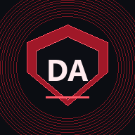
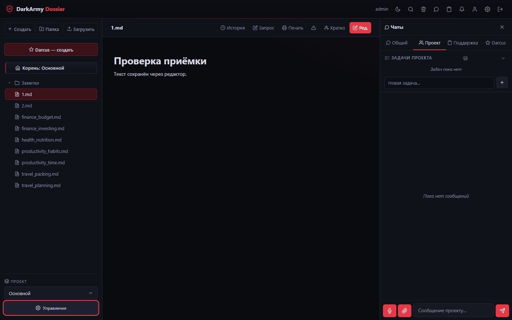
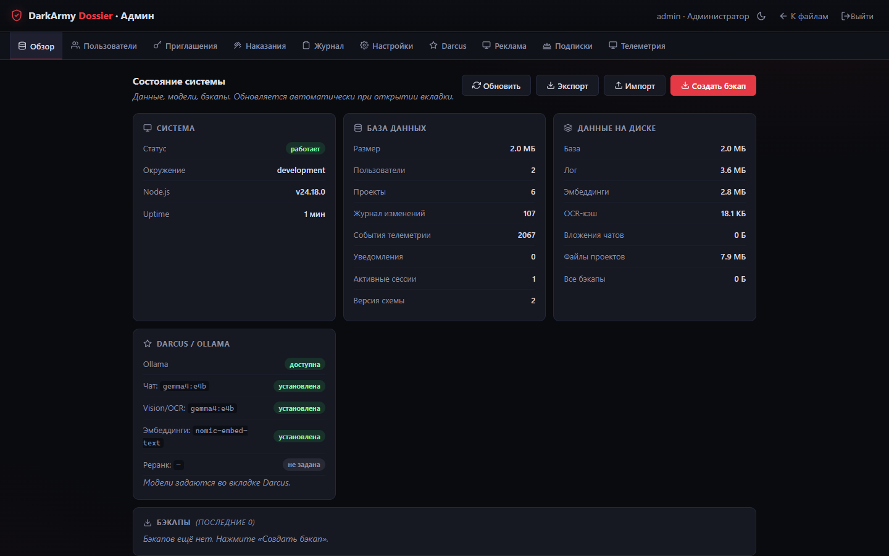
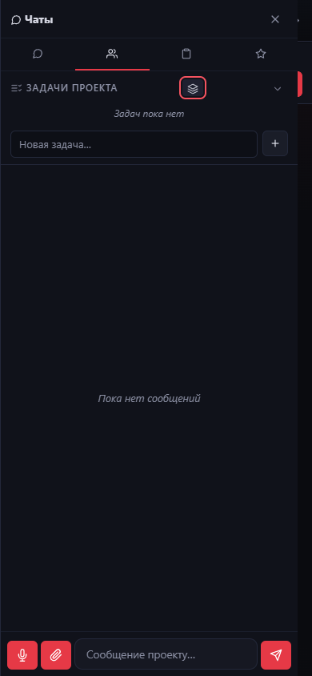

🗂
Проекты и файлы
Дерево папок, Markdown/DOCX/XLSX/PDF, корзина, история версий и публичные ссылки.

DarkArmy DossierПроекты, файлы, совместное редактирование в реальном времени и ИИ-ассистент Darcus — в одном защищённом пространстве. Готовый хостинг по подписке или бесплатное развёртывание из GitHub.

Работает на вашем железе
Дерево папок, Markdown/DOCX/XLSX/PDF, корзина, история версий и публичные ссылки.
SSE-синхронизация правок, канбан-задачи, роли, приглашения и журнал действий.
RAG по файлам и встроенным инструкциям, vision/OCR, голос, генерация документов и ACTION-действия.
PWA на телефон и ПК, готовые APK и EXE. Установка в один клик, без App Store.
Ubuntu, nginx/Caddy, Let's Encrypt и бэкапы. Данные не уходят третьим лицам.
SQLite на диске, сессии, роли и projectGuard. Никакой телеметрии наружу по умолчанию.


Darcus читает проекты через RAG, понимает скриншоты, создаёт документы, ставит задачи и открывает нужные файлы. Локальная Ollama — данные не уходят в облако.
you сделай реферат по квантовым вычислениям в файл docs/quantum.md
darcus Готово. Создаю документ docs/quantum.md…
✓ Darcus создал документ: docs/quantum.md
you поставь задачу проверить источники до пятницы
darcus Задача создана: «Проверить источники», срок 2026-12-04.
Разверните на своём Ubuntu или Windows. Полный код и документация на GitHub.
Мы уже развернули Dossier: проекты, файлы и совместная работа без своего сервера.
Подписка с AI-ассистентом Darcus и увеличенным лимитом файлов. Оплата — через Telegram.
Ubuntu 22.04/24.04, Node.js 20+, открытые 80/443. Остальное — скрипт и документация.
# 1. клонируй
git clone https://github.com/EvGeNkA-PLUSsss/darkarmy-dossier.git
# 2. разверни
cd darkarmy-dossier
sudo DOMAIN=dossier.example.com bash deploy/install-ubuntu.sh
# 3. HTTPS
sudo certbot --nginx -d dossier.example.comНа вашем сервере: SQLite в data/dossier.db, файлы проектов — в каталоге PROJECTS_ROOT. Облака и сторонние API не используются по умолчанию.
Для веба хватит 1–2 ГБ RAM. Для локального Darcus — Ollama и GPU/CPU; можно отключить ИИ и использовать Dossier как файловую базу.
Готовая версия — по подписке: администратор выдаёт код, который активируется в профиле. Для своего сервера подписка не нужна.
Да, в PWA/HTTPS: включите офлайн-режим в профиле, скачайте проекты и просматривайте без сети. Редактирование офлайн отключено во избежание конфликтов.
Android — PWA из Chrome или готовый APK. iOS — «На экран Домой» из Safari. Windows — PWA, EXE-лаунчер или Electron.